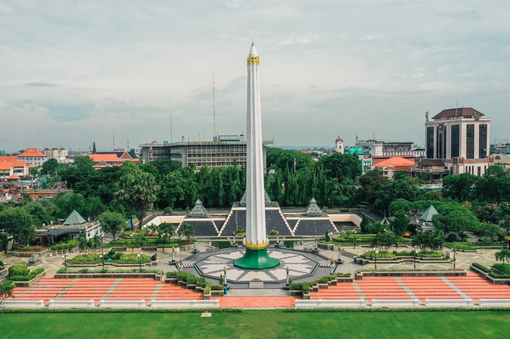
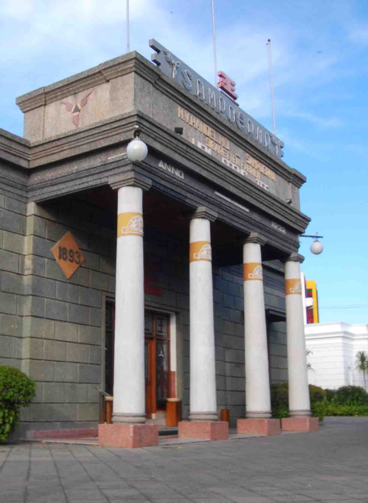
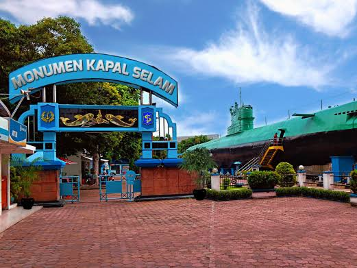
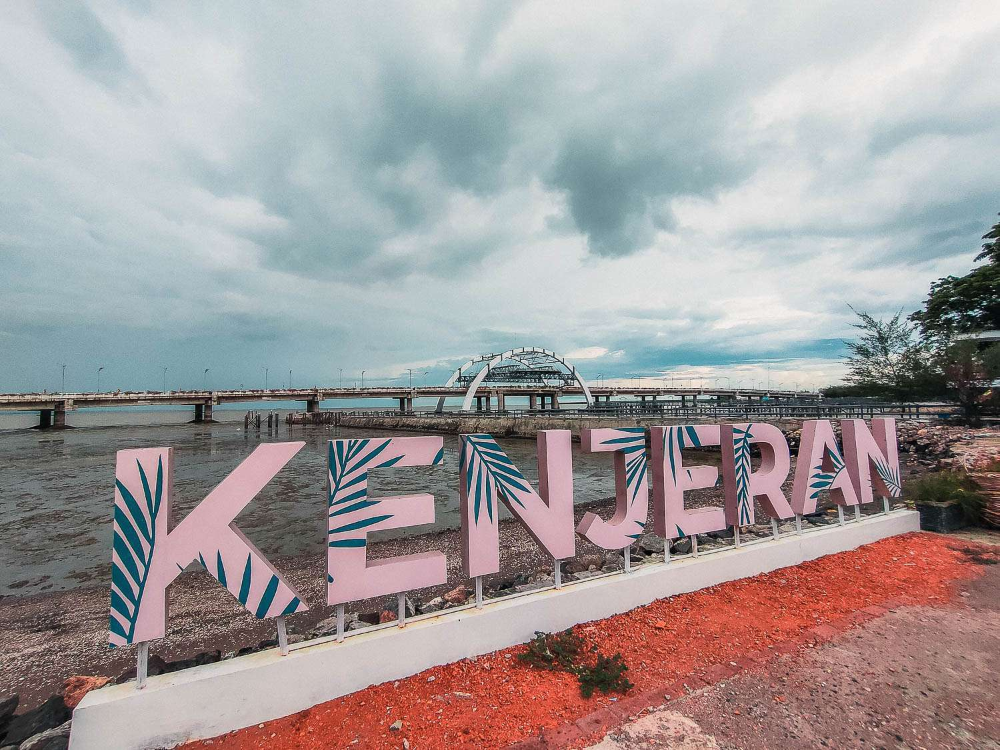
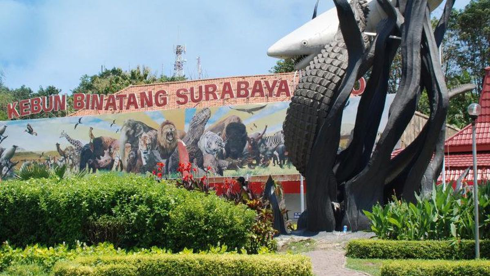
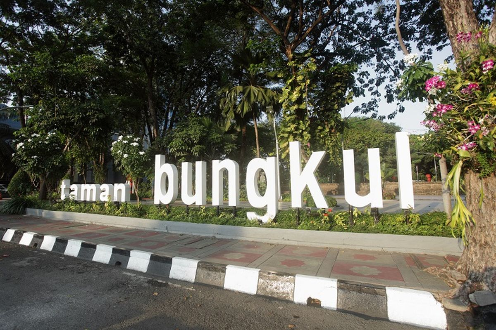
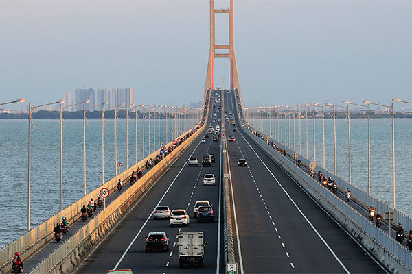

Places to Visit in Surabaya
From historic monuments to seaside parks, here are some spots worth putting on your itinerary, filter by type below.

Tugu Pahlawan
The Heroes' Monument, an 41-meter obelisk commemorating the Battle of Surabaya in 1945. An underground museum beneath it tells the story of the independence struggle.

House of Sampoerna
A Dutch colonial-era building turned museum and working cigarette factory, showcasing the history of the Sampoerna family and traditional hand-rolled kretek production.

Monumen Kapal Selam (Monkasel)
A real decommissioned Indonesian Navy submarine (KRI Pasopati) turned into a walk-through museum in the middle of the city, a favorite for a quick, unusual outing.

Pantai Kenjeran (Kenjeran Beach)
A coastal recreation area with a beach, seafood stalls, and the striking red Kenjeran Bridge nearby, a relaxed spot to watch the sunset over the Madura Strait.

Surabaya Zoo (KBS)
One of the oldest and largest zoos in Southeast Asia, home to hundreds of species, a classic family destination in the middle of the city.

Taman Bungkul
A lively city park popular for jogging, skateboarding, street food, and weekend gatherings, often cited as one of the best-managed public parks in Asia.

Jembatan Suramadu
Indonesia's longest bridge, connecting Surabaya to Madura Island across the strait, an impressive feat of engineering and a scenic drive, especially at night.